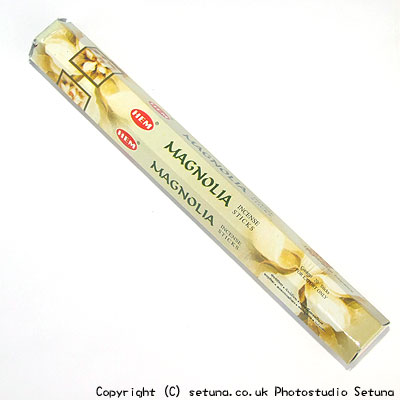

ヘム社/マグノリア香
HEM MAGNOLIA
そのままだと、お花系のルームフレグランスのような匂いです。
火を点けると、やわらかな花系の香りがかすかにふんわり香ります。
本物のマグノリアの花の匂いを嗅いだ人は分かると思いますが、あの甘い匂いの部分だけを凝縮したような感じですね。

<焚き合わせできるお香>- 「サラスワティ香」
- 香水の様に華やかになります。
- 「シヴァ香」
- 木花系の優しい香りが増します。
- 「ヴィシュヌ香」
- ヴィシュヌ香の難しい苦みを帯びた感じがなくなり、優しい甘みと丸みを帯びて、全く違う香りに・・・
軽く甘く爽やかで、ワルツを踊る様に香りが部屋に広がり始めます。
「こんなに変わるんかい！」と関西弁のツッコミを入れたくなるのを止められません・・・(汗)
一つ前のページへ戻る